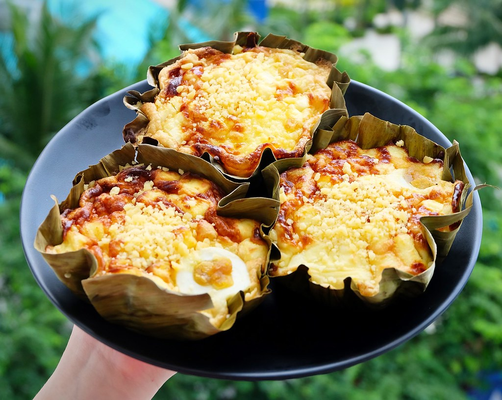

Bibingka Recipe

Video Tutorial: Bibingka Recipe Video
Bibingka is a classic Filipino rice cake often enjoyed during the Christmas season. Here's how to make it:
Ingredients:
- 2 cups rice flour
- 1/2 cup all-purpose flour
- 1 cup sugar
- 1 tablespoon baking powder
- 1/2 teaspoon salt
- 3 eggs
- 1 cup coconut milk
- 1/2 cup water
- 2 tablespoons melted butter, plus more for brushing
- Salted eggs, sliced (optional)
- Grated coconut, for topping
- Banana leaves, for lining the baking pan
Instructions:
- Preheat oven to 350°F (175°C). Grease a baking pan and line it with banana leaves.
- In a large bowl, combine rice flour, all-purpose flour, sugar, baking powder, and salt.
- In another bowl, whisk together eggs, coconut milk, water, and melted butter.
- Pour the wet ingredients into the dry ingredients and mix until smooth.
- Pour the batter into the prepared baking pan.
- Top with sliced salted eggs, if using.
- Bake in the preheated oven for 25-30 minutes, or until a toothpick inserted into the center comes out clean.
- Brush the top of the bibingka with melted butter.
- Sprinkle grated coconut on top.
- Serve warm and enjoy!